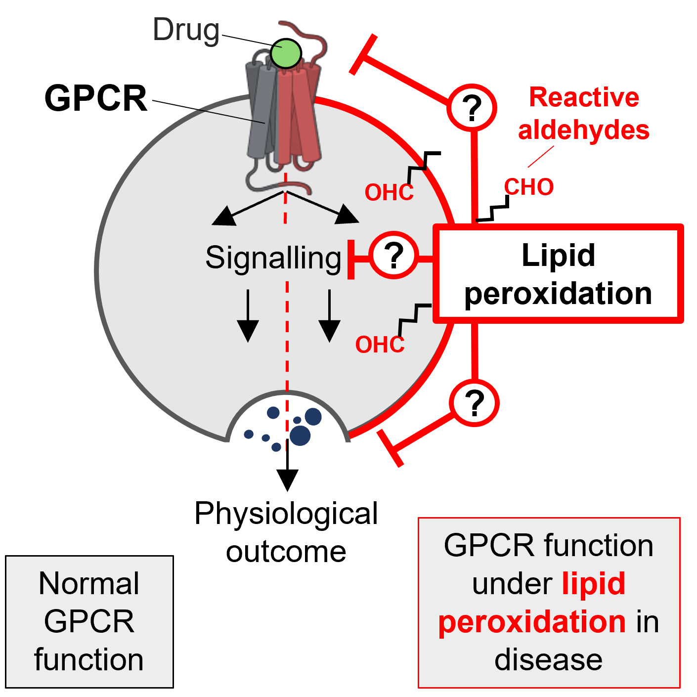

Research
Our research sits at the interface of chemistry and biology. We are particularly interested in deciphering the roles of G protein-coupled receptors (GPCRs) in the development of disease. GPCRs are the largest class of membrane proteins and highly popular drug targets. Our research tools span from small chemical molecules to high-precision proteomics approaches. Please read this short review if you want to know more about GPCRs. Scroll down to learn more about our research directions.
• Proximity Proteomics Platforms

We are developing proximity proteomics technologies to resolve GPCR interactomes and find new potentially druggable protein interactions. For example, in this approach, the protein of interest is genetically fused with a small APEX2 tag, an engineered ascorbate peroxidase. The interactome of the protein of interest in ~20 nm proximity to the target is then biotinylated, enriched and coupled to quantitative mass spectrometry, followed by bioinformatics. For an example of APEX2 technology applied to a GPCR for luteinizing hormone, LHR, please refer to our latest paper in Cell Chem Bio 2025.
We are also interested in developing new proximity labelling methods, such as photoproximity labelling and light-controlled proximity labelling.
• GPCRs and Lipid Peroxidation

GPCRs are highly-attractive drug targets in type 2 diabetes (T2D) and other metabolic disorders (think of a popular Ozempic targeting GLP-1 receptor). However, many more promising drugs do not work in patients or lose efficacy over time. We are interested to understand why.
Lipid peroxidation in cell membranes contributes to progression of T2D by generating reactive aldehydes, which irreversibly attack proteins.
We are investigating what happens to metabolic GPCRs when they are attacked by reactive aldehydes, and how this regulates their function. This process potentially has significant implications in how GPCRs respond to their drugs and interact with other proteins in T2D and other metabolic disorders.
• Compartmentalised GPCR Signalling

Spatial compartmentalisation of GPCR signalling adds another layer of function and fine-tunes cellular signalling. Beyond their traditional plasma membrane locations, GPCRs are now found in various organelles, including endosomes, nuclei and mitochondria. Organelles offer distinct interactome environments; therefore, GPCR signalling in these compartments is distinct from plasma membrane signalling and leads to distinct physiological outcomes. Dissecting such compartmentalised signalling is a technical challenge, and we are trying to address it with high-precision chemical biology and proteomics. We are currently developing a new chemical biology platform to selectively target GPCRs in mitochondria and elucidate their biological roles in these organelles.